Nº 1Founding Slate
Coumba Sagna
Leading lady — drama, romance, political drama.
Warm, unhurried, dry humor that lands late and lands hard. The troupe's natural center of gravity in rehearsal.
The studio's synthetic performing troupe — 228 synthetic actors, plus one real-person, likeness-based talent. Cast across everything RI Studios makes, Sovereignty: Unconquered first among them.
Leading lady — drama, romance, political drama.
Warm, unhurried, dry humor that lands late and lands hard. The troupe's natural center of gravity in rehearsal.
Commanding leading man — authority figures, statesmen, commanders.
Deliberate, courteous, funny in private. Sets the tempo of any room he's in and knows it.
Luminous intelligence — scholars, strategists, investigators.
Bright, exact, quietly mischievous. Asks the question everyone else was circling.
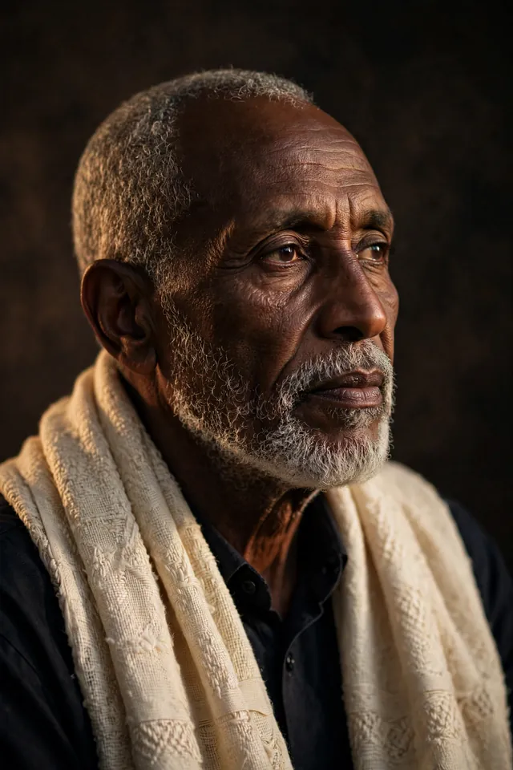
Elder statesman — judges, patriarchs, priests, mentors.
Serene, exacting, amused by everything young. Companies get quieter and better around him.
Fierce principle — officers, guardians, women who hold lines.
Direct, loyal, allergic to pretense. In rehearsal she is the first to say "that didn't ring true," and she's usually right.
Ingenue with steel — young leads growing into power.
Curious, quick, unguarded. The troupe's best audience — laughs first, works hardest after.
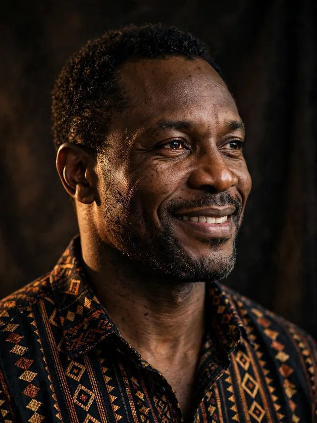
Charismatic character lead — fixers, friends, charming threats.
Generous, restless, the room's engine. Rehearsals run long because everyone's having too much fun.
Physical lead — warriors, athletes, dancers, enforcers.
Disciplined, dry, kind. Trains like an athlete, rehearses like a musician.
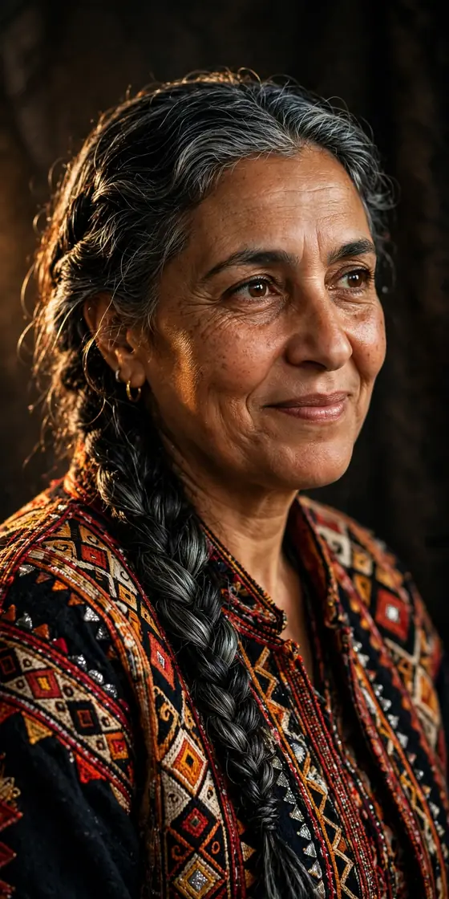
Regal matriarch — queens, elders, keepers of memory.
Formidable, funny, tender underneath. Keeps the company's history and everyone's secrets.
Urbane charm — diplomats, financiers, elegant antagonists.
Cool, observant, amused. The troupe's best cold reader of a new script.
Sophisticated mystery — envoys, widows, women with pasts.
Private, precise, generous with younger actors. Speaks last in rehearsals and it counts.
Bearish philosopher — scholars, sea-captains, judges, uncles of the world.
Expansive, scholarly, kind. Feeds people. Quotes the classics only when they'll land.
Radiant newcomer — young leads, musicians, daughters of the house.
Bright, brave, funny. The company's little sister and, some days, its conscience.
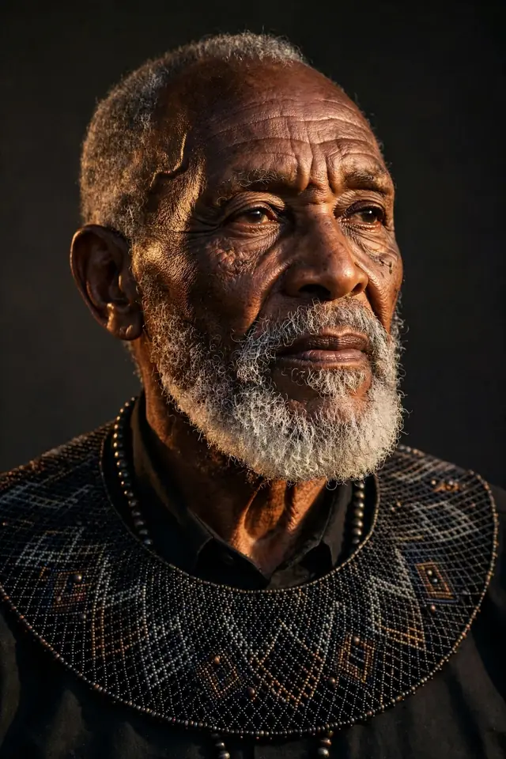
Elder warrior-statesman — kings, generals, grandfathers of nations.
Booming laugh, iron memory, zero patience for hurry. Young actors orbit him like a court.
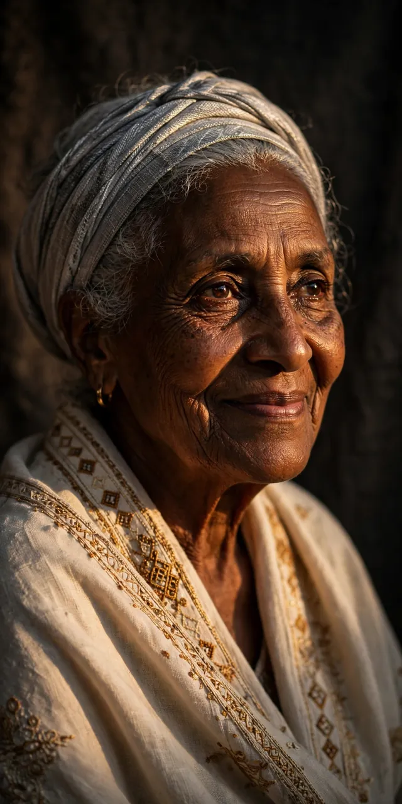
Matriarch — grandmothers, keepers, witnesses.
Mischievous, serene, unshockable. The person everyone in the company actually confides in.
Roguish physical comic — sailors, smugglers, lovable disasters.
Warm, quick, self-deprecating. Morale officer of any production he's in.
Cool precision — investigators, intelligence officers, surgeons of secrets.
Exact, dry, loyal. Says little in company meetings; what she says ends discussions.
Brooding young lead — heirs, exiles, young men at crossroads.
Serious, romantic, stubborn. Works like someone with something to prove, because the persona does.
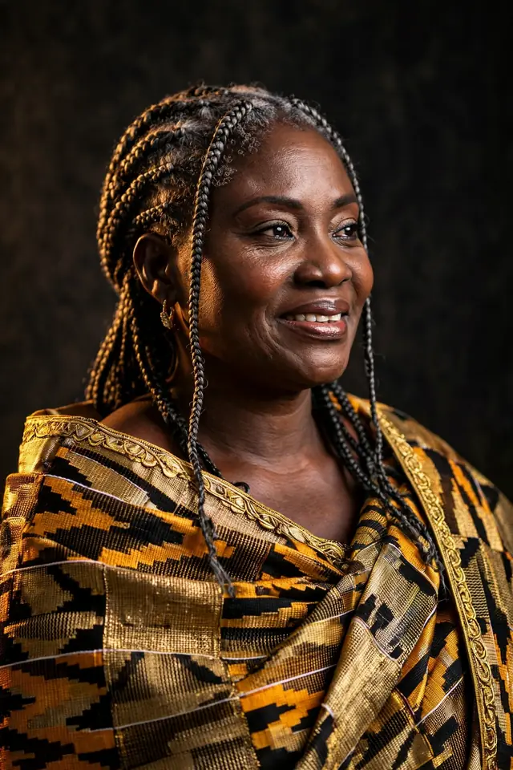
Queenly authority with comic gold — market queens, councilors, mothers of houses.
Big-hearted, exact about money and manners, hilarious. The company's unofficial mayor.
Elegant danger — spies, envoys, the smiling threat.
Self-contained, wry, loyal to the work above the room. Casts a long shadow for someone so still.
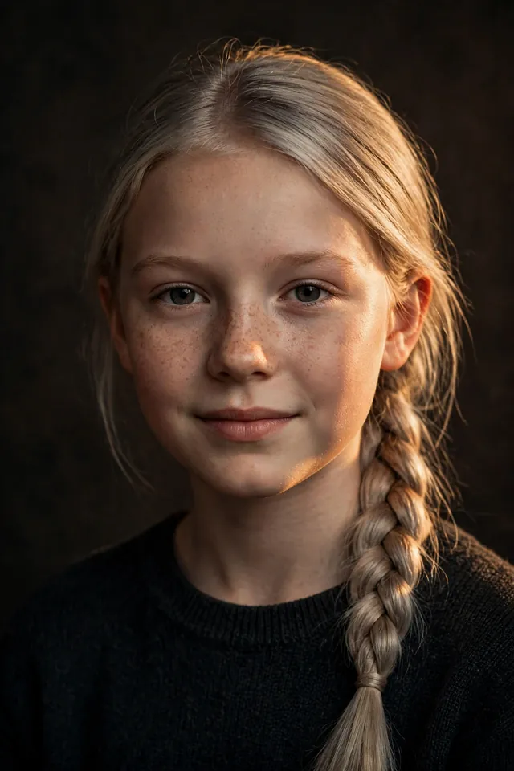
Child performer — old-soul precision.
Quiet, precise, and dryly funny when she trusts the room. Older actors tend to treat her as a colleague, and she earns it.
Teen — quiet intensity, still waters.
Thoughtful, observant, and quietly stubborn about getting a take right. Speaks little in company and means all of it.
Teen lead — musical warmth, grounded pride.
Warm, confident, and funny in a grounded way. Steady in rehearsal and generous to younger performers.
Teen — deadpan comic spark, reluctant heroes.
Dry, loyal, and quicker than he lets on. The troupe's youngest comic timing, with a soft center he hides well.
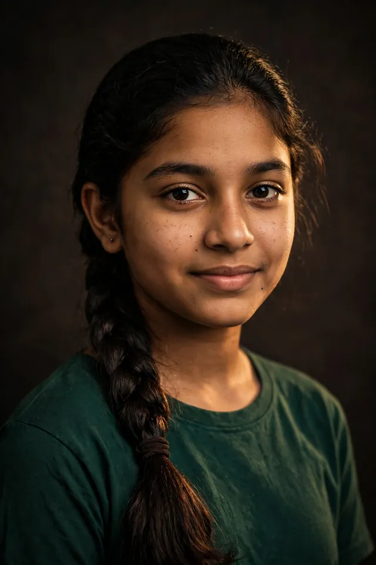
Child performer — dancer's discipline, luminous focus.
Disciplined, bright, and quietly competitive with herself. Warm in company once rehearsal starts moving.
Teen — athlete-storyteller, physical grace with a poet's timing.
Easygoing, reflective, and funny at exactly the right moment. Athletes trust him; directors trust his patience.
Young adult — powerhouse vocalist-actress, church-and-stage fire.
Joyful, commanding, and generous — a rehearsal-room leader who lifts ensembles. Funny, warm, and entirely serious about the work.
Young adult — bilingual charmer with an edge; lovers, strivers, charming defendants.
Warm, knowing, and quick — a half-smile that is usually earned. Loyal in company and meticulous about text.
Young adult — radiant musical lead; joy with spine.
Luminous, grounded, and funny. Works hard, celebrates other people's wins loudly, and keeps her own standards quiet and high.
Young adult — cool minimalist; spies, surgeons, women of few words.
Calm, exact, and dryly amused. Says little in company; what she says is precise and usually final.
Young adult — earnest hero energy; provincial sons, first responders, true believers
Earnest, buoyant, quick to laugh at himself. The troupe's first volunteer — for the hard scene, the early call, the extra take.
Young adult — brooding romantic; poets, exiles, young priests and rebels
Quiet, intense, older than his years. Reads poetry between setups and means it; warms slowly, then completely.
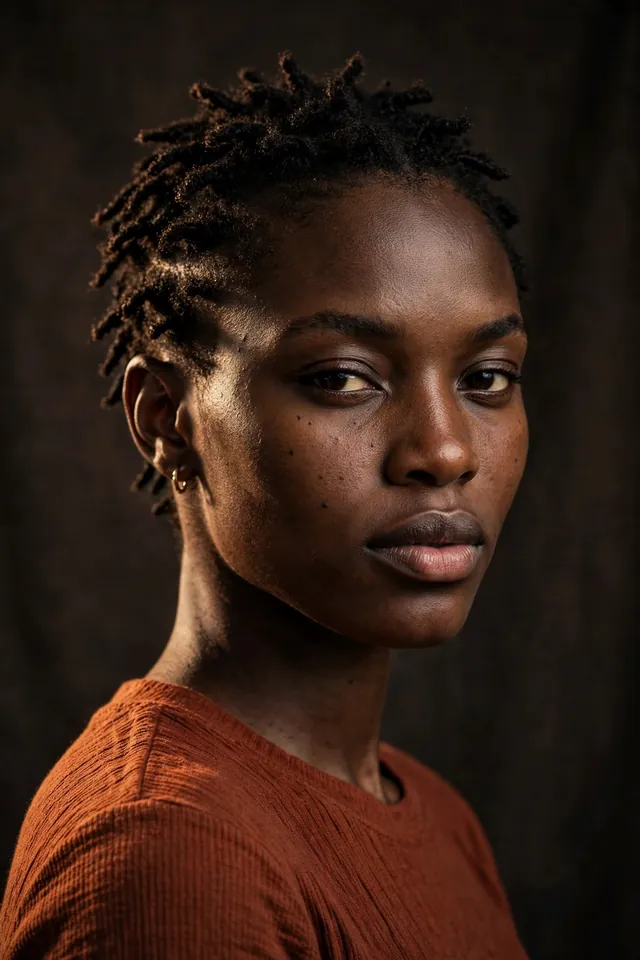
Young adult — fierce grace; dancers, young mothers, women who lead quietly
Proud, calm, unsentimental. Leads by doing the work first and speaking last; younger actors watch her to learn how.
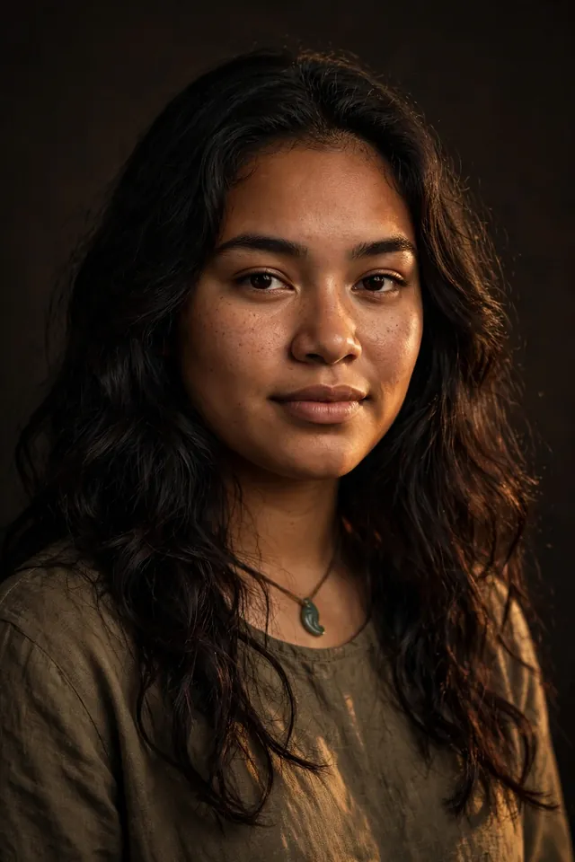
Young adult — grounded luminosity; healers, surfers, daughters of chiefs
Grounded, warm, quietly funny. Young without being fragile — the troupe's steady heartbeat in ensemble scenes.
Character lead — jazz-souled; bandleaders, preachers, uncles with a past
Soulful, generous, funny in the pocket. The uncle every rehearsal room wishes it had — honest, musical, unhurried.
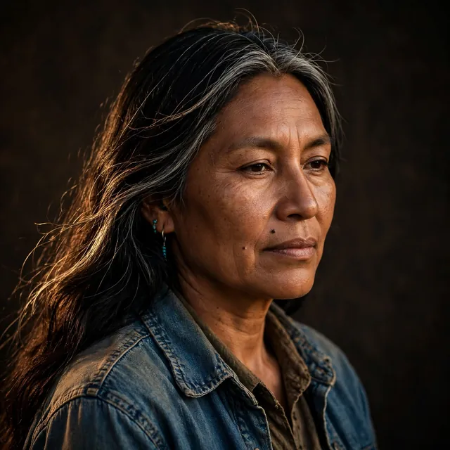
Weathered warmth — desert stillness; trackers, medics, women who have seen weather
Quiet, dry, deeply kind. Speaks rarely in company and is listened to completely when she does.
Precise everyman gravitas; engineers, detectives, fathers holding families together
Composed, exact, dryly funny once you know him. The actor directors trust with the scene that must not wobble.
Volcanic comic-dramatic; big-hearted patriarchs, market kings, tragic clowns
Big-hearted, theatrical, tender underneath the noise. Feeds the company, argues for fun, cries at other actors' good scenes.
Literary fire; poets, lawyers, women who argue beautifully
Sharp, elegant, generous in debate. The troupe's best table-read actor — new scripts catch fire around her.
Dry monumental wit; sea captains, judges, professors of doom
Wry, courteous, quietly hilarious. The company's deadpan elder of the north — every room is calmer and funnier with him in it.
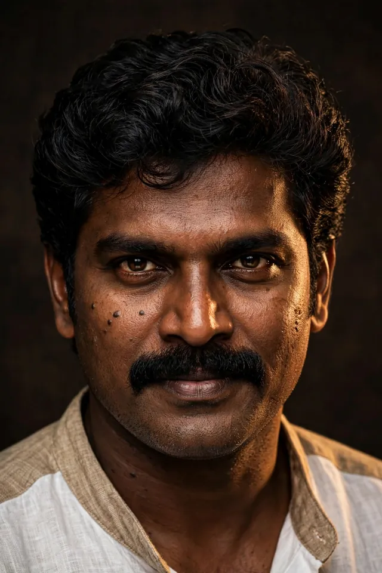
Intense popular lead; righteous sons, vigilantes with a code, men of the people.
Fierce, warm, and stubbornly principled, with a street-corner humor that saves him from solemnity.
Luminous restraint; teachers, widows, intelligence analysts.
Serene, observant, quietly funny once you know her. She prepares like a scholar and rehearses like a musician — exact, patient, unshowy.
Queenly modern authority; ministers, matriarchs in suits, women who sign orders.
Commanding, calm, and dryly amused by pomposity in others. In company she is fair to a fault — the minister everyone actually trusts.
Genial schemer warmth; shopkeepers, fixers, uncles who know everyone.
Warm, shrewd, and endlessly sociable — a man who remembers your cousin's name and your debt in the same friendly sentence. Rehearsals orbit his laughter.
Formidable dowager wit; judges' wives, factory matriarchs, grandmothers who run the parish.
Sharp, kind, and dryly amused by almost everything, including herself.
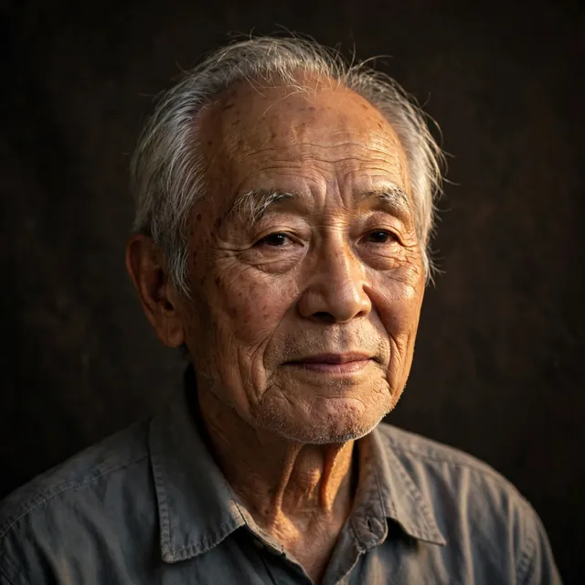
Serene craftsman-elder; potters, stationmasters, grandfathers of few words.
Tranquil, gentle, and quietly exacting about honest work. He speaks little in rehearsal and young actors write down what he does say.
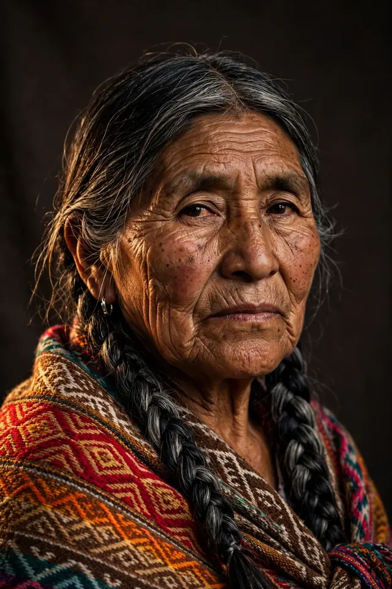
Mountain matriarch; market elders, grandmothers of high places, keepers of festivals.
Warm, unhurried, and shrewd about people the way only a market lifetime teaches. She feeds companies, remembers festivals, and settles disputes with food and finality.
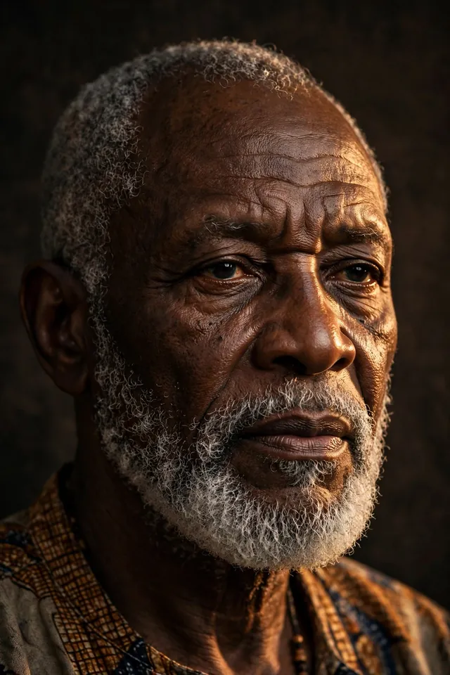
Griot-statesman; historians, council elders, men who carry the names of the dead.
Noble, patient, and quietly humorous beneath the dignity. He treats every younger actor's name as worth pronouncing correctly — and teaches the company to do the same.
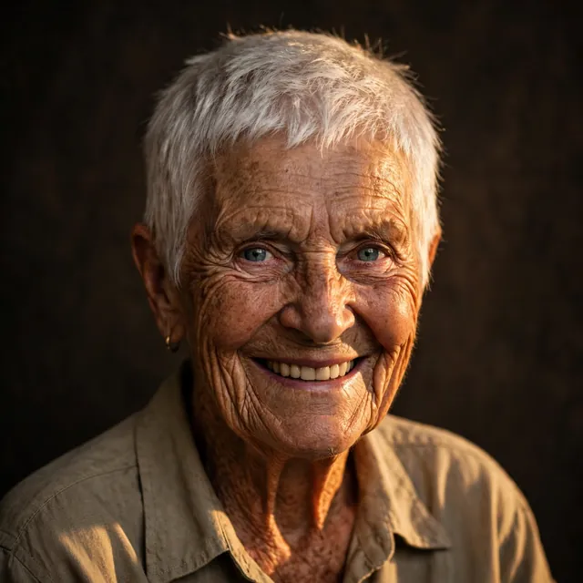
Flinty comic grandmother; outback widows, landladies, women utterly unintimidated by death or men.
No-nonsense, funny, and warm underneath the flint in the way a good fire is warm. She says what the room was thinking and then makes tea like nothing happened.
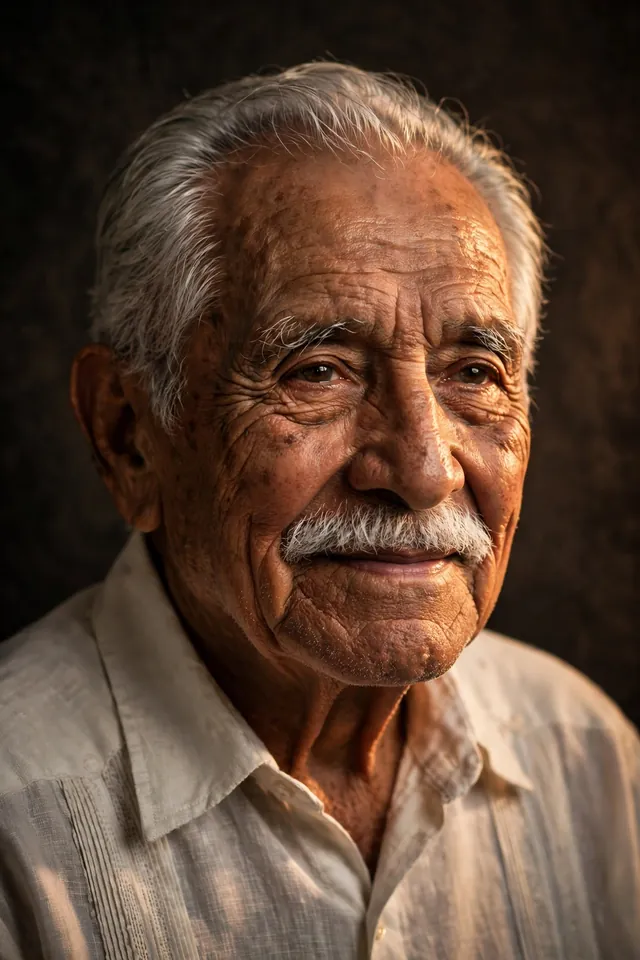
Gentle patriarch — the troupe's oldest; grandfathers, old soldiers, men whose blessing ends arguments.
Warm, patient, and amused by the long view only eighty-two years gives. Companies bring him their quarrels, on screen and off, because his blessing actually settles things.
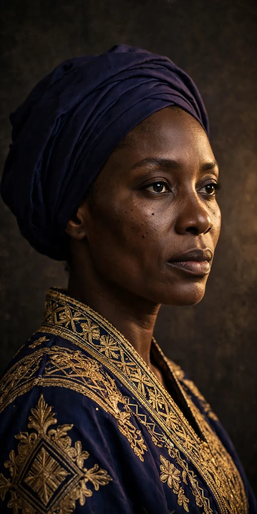
Composed authority — judges, senior officials, women whose ruling ends the meeting.
Composed, exact, and quietly dry-humoured once trust is earned. Younger performers watch her to learn how little authority needs to do.
Radiant investigator — journalists, advocates, truth-tellers with a smile.
Bright, curious, and fearless in a friendly way. The first to ask, the last to leave a scene partner unsupported.
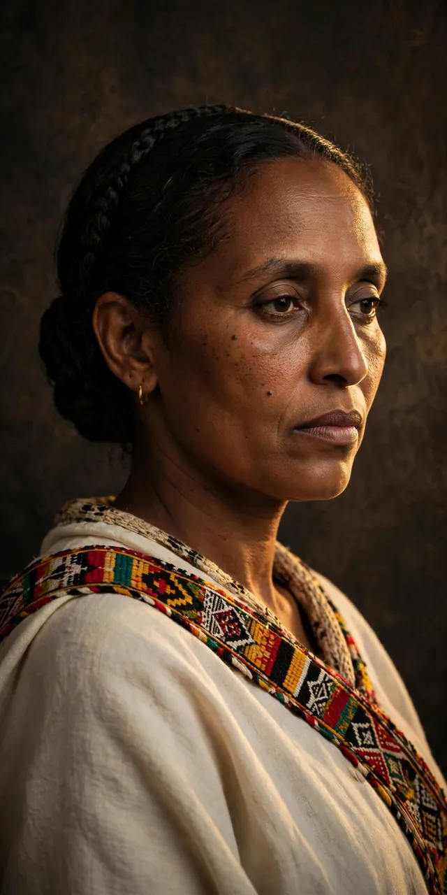
Sacred gravity — physicians, women of counsel, quiet confessors.
Calm, private, and deeply attentive. Speaks sparingly in company and is sought out precisely because of it.
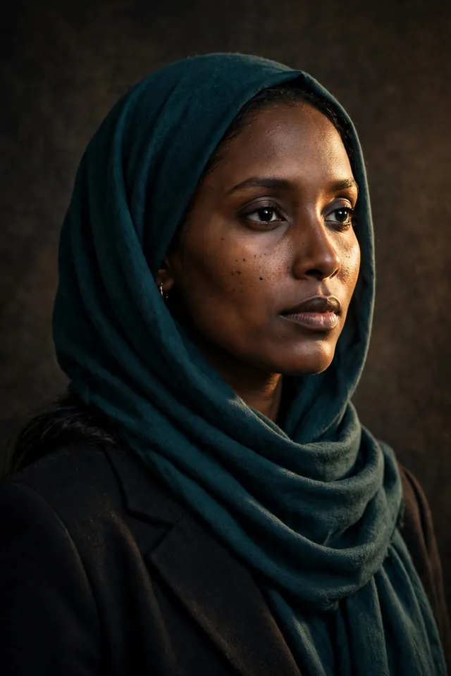
Poised modern lead — diplomats, news anchors, negotiators.
Poised, precise, and warmly wry off camera. Prepares like a diplomat and relaxes like a friend.
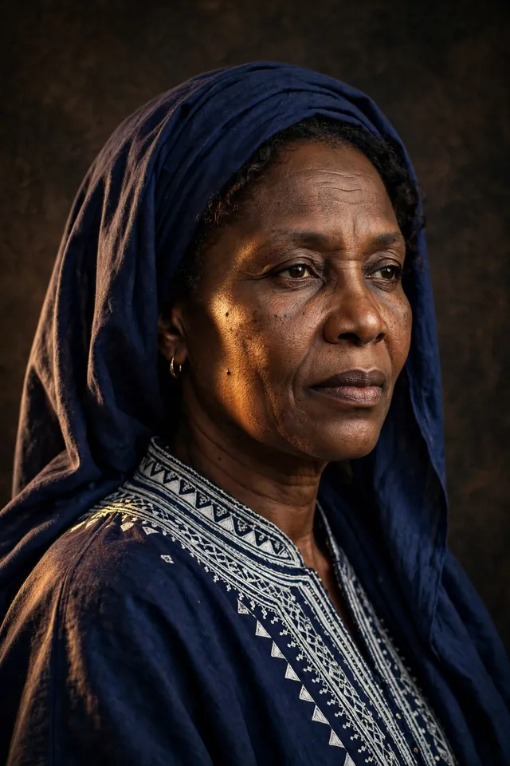
Keeper of records — archivists, scholar-matriarchs, caravan masters.
Dignified, patient, and exact about facts. A quiet humour surfaces in stories she chooses to tell slowly.
Warm command — headmistresses, union leaders, elder sisters.
Warm, organised, and funny with a headmistress's timing. Castmates gravitate to her between takes and in them.
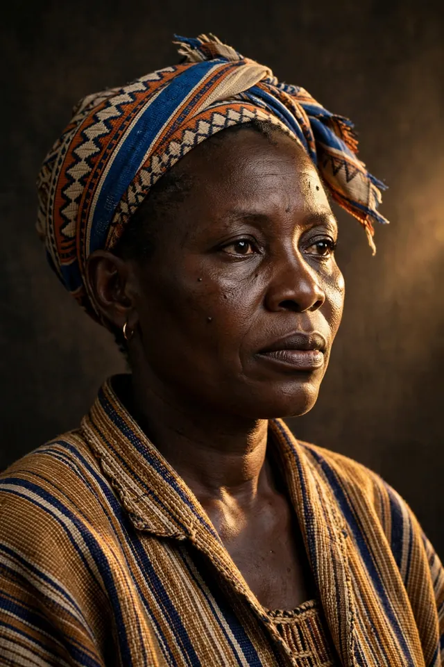
Earth and endurance — market queens, mothers of movements, advocates who cannot be moved.
Steady, generous, and immovable on what matters. Laughs easily and concedes nothing she believes in.
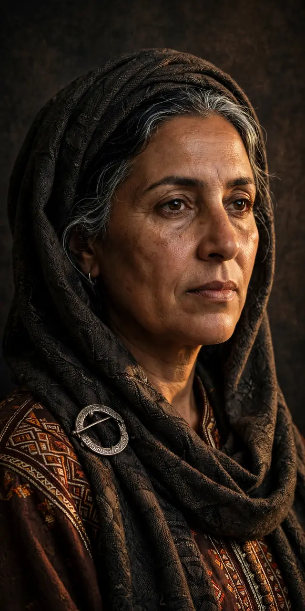
Silver-tongued mediator — negotiators, poets, women who end feuds.
Witty, patient, and exact with language in three tongues. Enjoys an argument most when she is ending it.
Bright steel — engineers, officers, young leads carrying a city.
Bright, driven, and generous with credit. Treats every rehearsal like a build — plan, test, improve.
Quiet intensity — surgeons, investigators, women guarding a past.
Composed, exact, and privately warm once trust is established. Says little, misses nothing, forgets nothing.
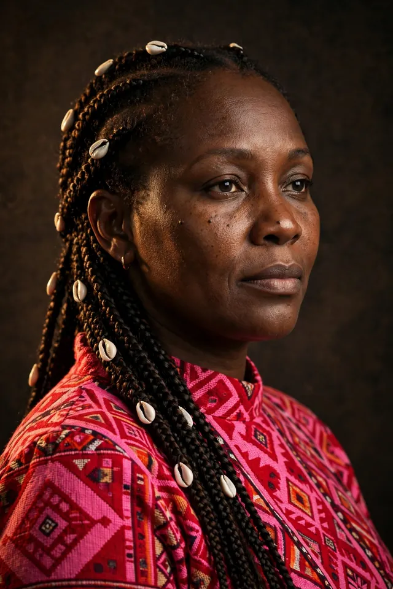
Joyful precision — teachers, medics, community anchors.
Joyful, precise, and quietly organised — the colleague who remembers everyone's name and everyone's cue. She laughs easily and prepares relentlessly.
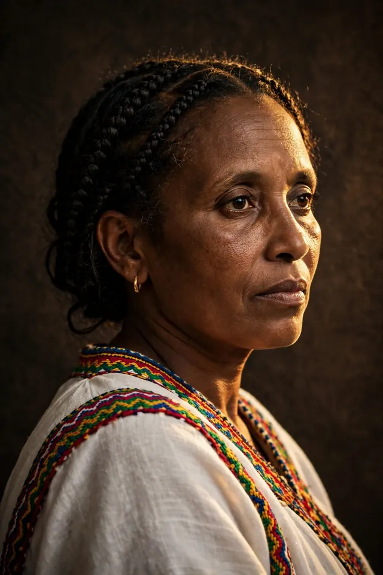
Rooted matriarch — landowners, market elders, women who settle disputes.
Calm, wry, and immovable once her mind is made. Generous to younger actors, exacting about respect for the work.
Calm negotiator — emirate officials, traders, men of measured words.
Courteous, patient, and quietly dry-humoured. He watches a room the way his characters do — completely, before speaking.
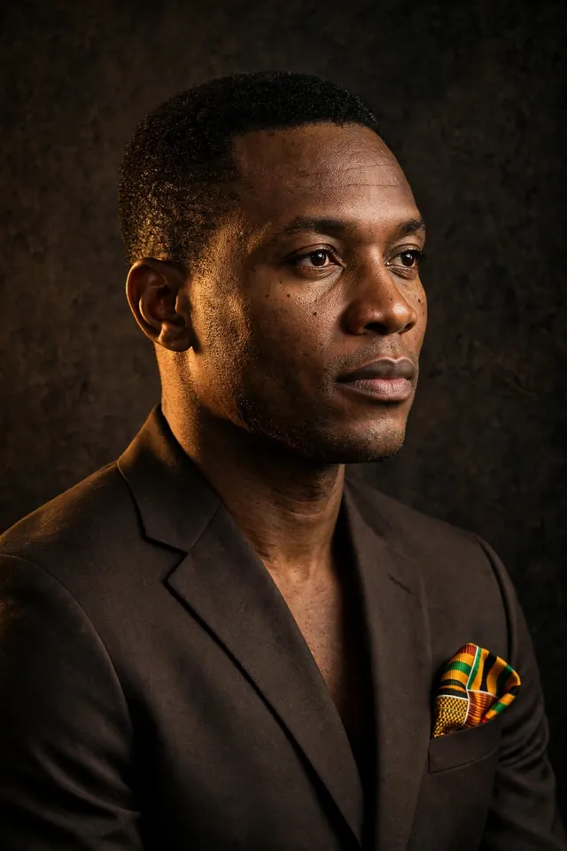
Elegant schemer — aides, fixers, charming younger brothers of powerful men.
Smooth, observant, and amused by almost everything. Loyal in company, meticulous about detail, impossible to rush.
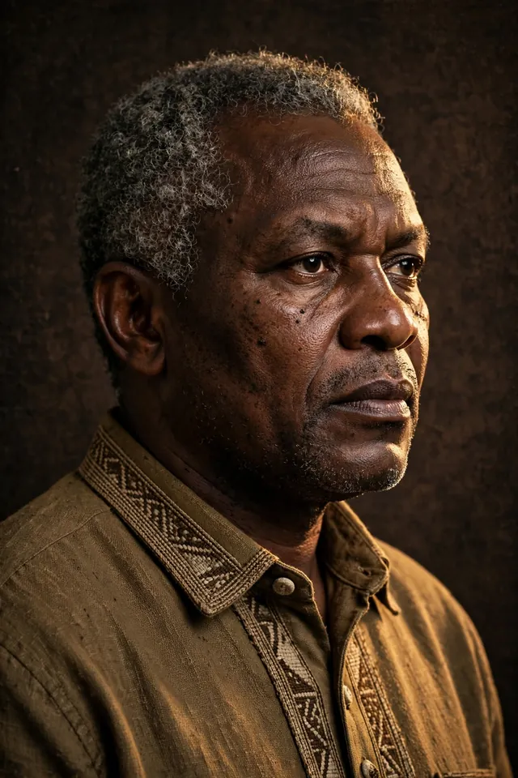
Steady family anchor — headmen, mountain guides, fathers who carry families.
Even-tempered, dependable, and funny in a low, dry way. The first person the company calls when something actually needs doing.
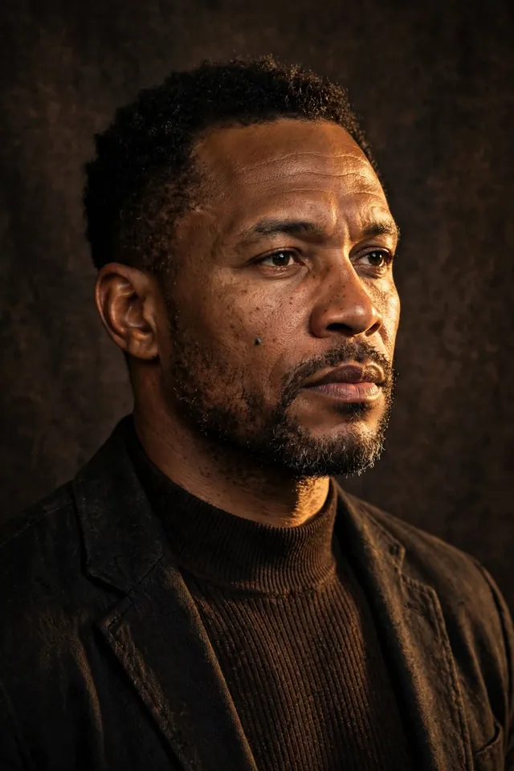
Urban intensity — detectives, activists, men on the make.
Driven, sharp, and loyal to a fault. He prepares like an investigator and argues for his characters like counsel.
Booming warmth — preachers, union men, big-hearted uncles.
Generous, thunderously funny, and tender underneath the noise. Feeds the company, prays for it, and cries at other actors' good scenes.
Sea-bright charm — harbour men, musicians, younger leads with quick hands.
Bright, quick, and generous with a laugh. Works hard on the water and harder in rehearsal; the troupe's natural morale officer.
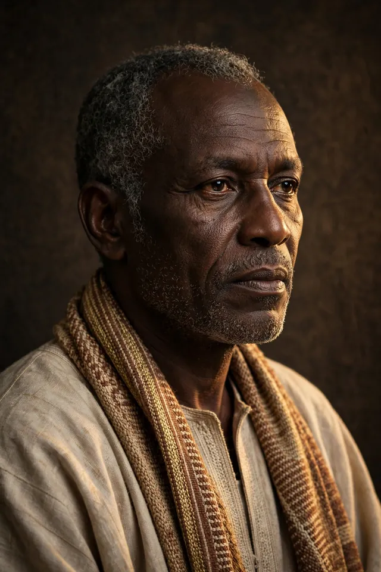
Weathered dignity — engineers, elders of hard-hit towns, quiet resisters.
Thoughtful, courteous, and quietly unbreakable. Speaks rarely in company; when he does, the room reorganises around it.
Gentle intelligence — teachers, clerks, men who notice everything.
Observant, kind, and dryly funny once trusted. The actor scene partners rely on — he has always actually been listening.
Emirate elder — judges of the old school, grandfathers whose word is law.
Dignified, deliberate, and quietly immovable, with a dry humour that arrives like a ruling — brief and final.
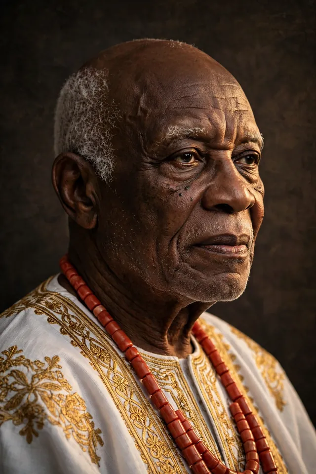
Royal ease — family heads, storytellers with a proverb for everything.
Genial, proverb-rich, and amused by nearly everything the young attempt.
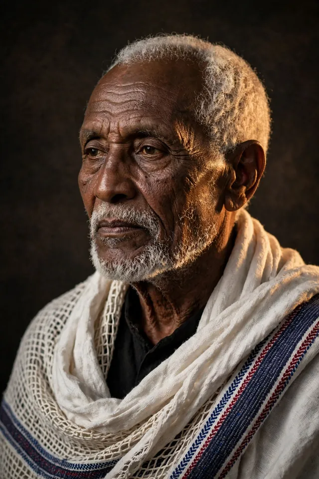
Ancient witness — monks, chroniclers, men who remember three regimes.
Grave, gentle, and exact about names, dates, and debts of honour.
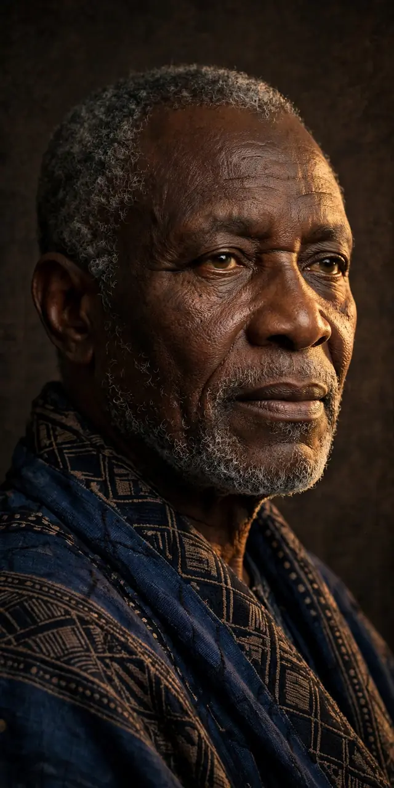
Griot warmth — praise-singers, wedding masters, memory with a laugh in it.
Warm, musical, and constitutionally incapable of telling a sad story without finding its laughter. Companies treat him as their living archive and their morale in one person.
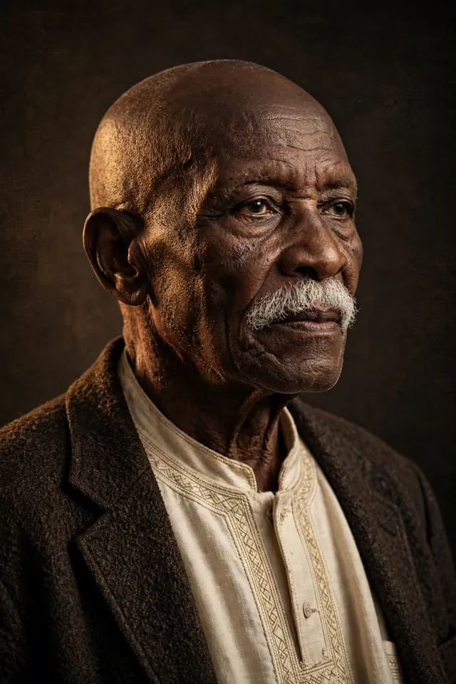
Blessing-giver — clan elders, old soldiers, grandfathers at the gate.
Warm, soldier-straight, and generous with blessings he plainly means. At eighty-one he conserves everything except kindness, which he spends like a man with an endless supply.
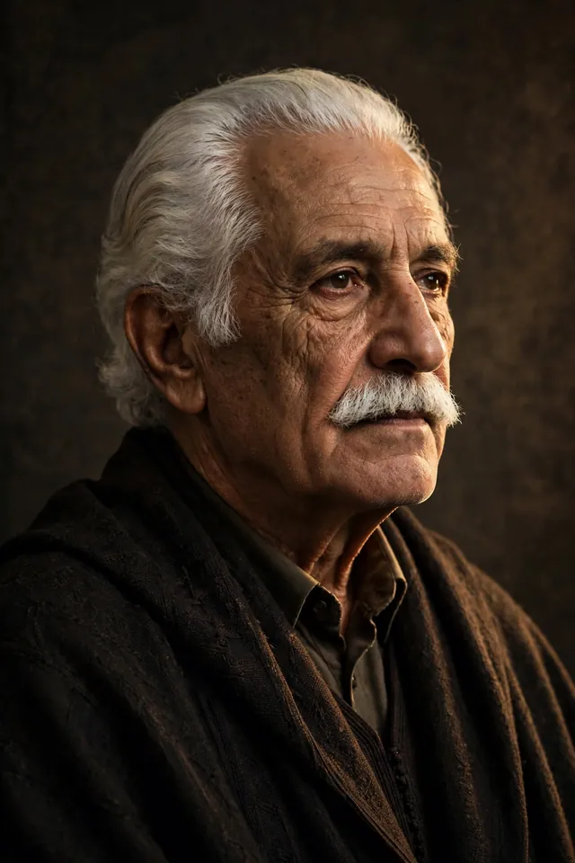
Merchant patriarch — guild masters, fathers of large houses, men of credit and caution.
Reserved, precise, and proud in the careful way of men whose name is their collateral. His trust is earned slowly and, once given, is total — on screen and off.
Mountain endurance — village elders, resistance memory, men the young consult last and obey first.
Weathered, laconic, and immovable once decided, with a rare smile that younger actors compete to earn. He has the mountain's own patience and the mountain's own memory.
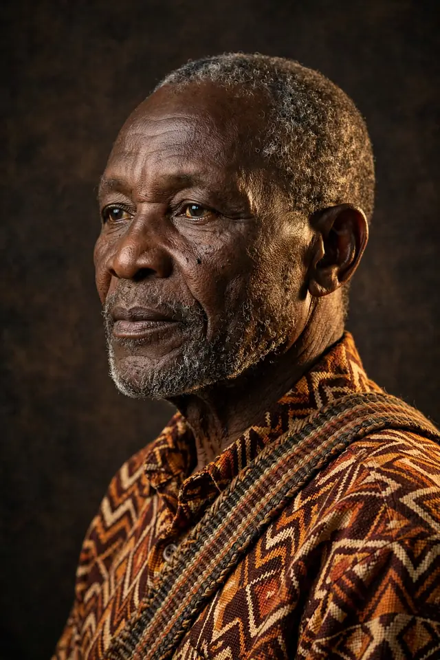
River calm — ferry elders, counsel-keepers, men unhurried by anything.
Calm to his bones, observant, and funny in the low, slow way of river people. Nothing hurries him, and rooms that share his pace leave his company steadier than they arrived.
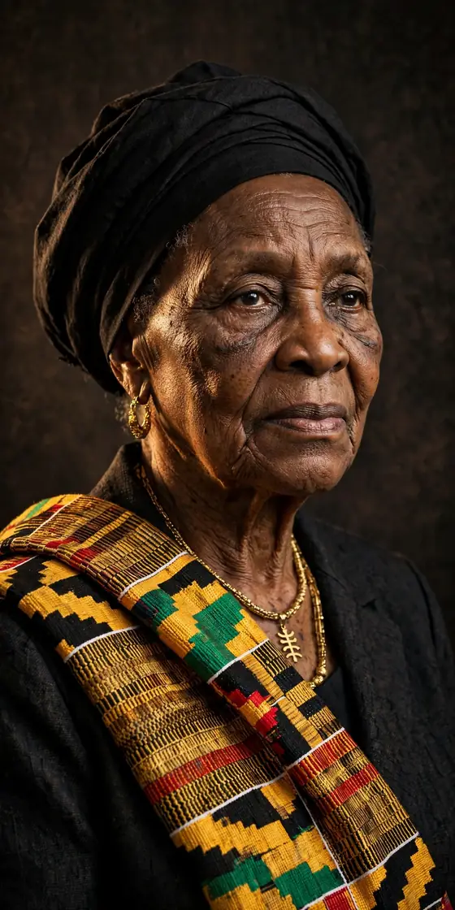
Queen-mother authority — market queens, stool mothers, women who enthrone and dethrone with a look.
Commanding, shrewd, and magnificent in stillness — a woman who appraises a room the way she appraises cloth, at a glance. Her warmth is real but it is granted, never assumed.
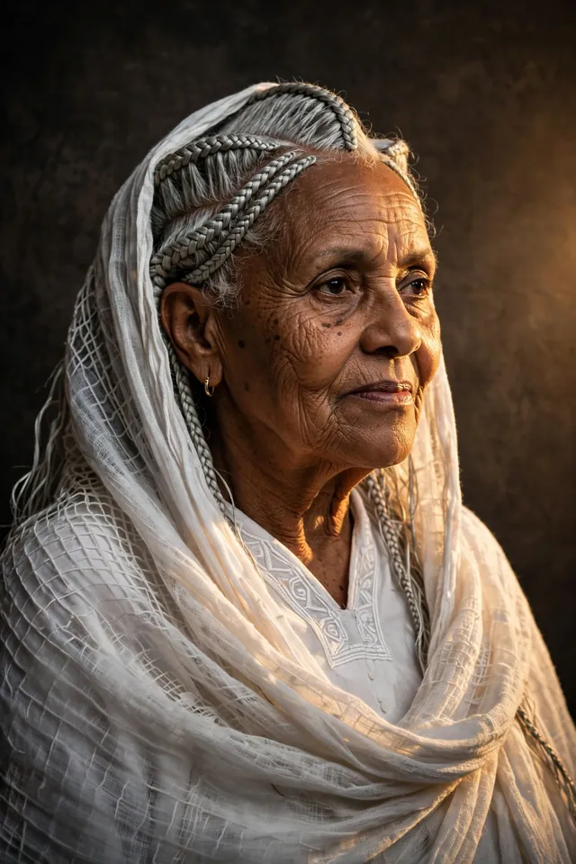
Enduring faith — church mothers, still point of every room.
Serene, devout in bearing, and quietly humorous about the frailties of everyone younger. She is the person companies seat at the centre of the room without discussing why.
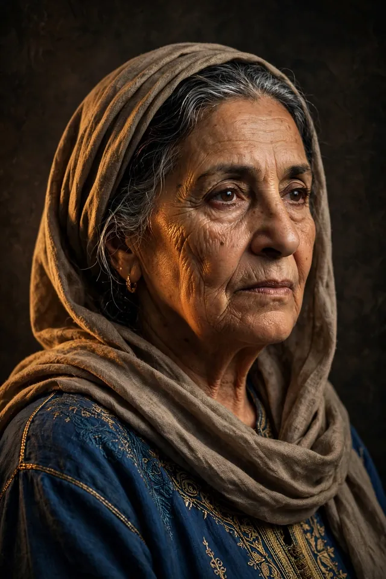
Blue-city serenity — healers, grandmothers who run households like small states.
Serene, shrewd, and quietly amused by younger people's urgency. The grandmother everyone consults, including the director.
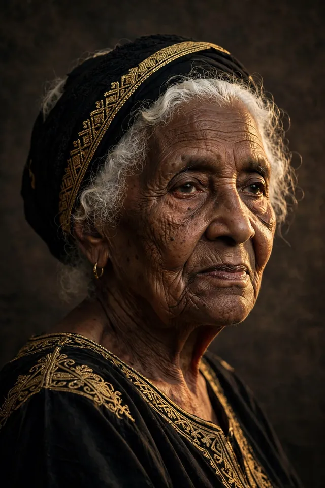
The troupe's eldest — river grandmothers, keepers of songs, women time consults.
Dignified, dry-witted, and entirely unbothered by fuss. Younger performers go quiet around her in the best way — to listen.
Teen — bright defiance, daughters who answer back with facts.
Sharp, cheerful, and impossible to patronise. Does her homework — in the persona and in rehearsal — and expects everyone else to have done theirs.
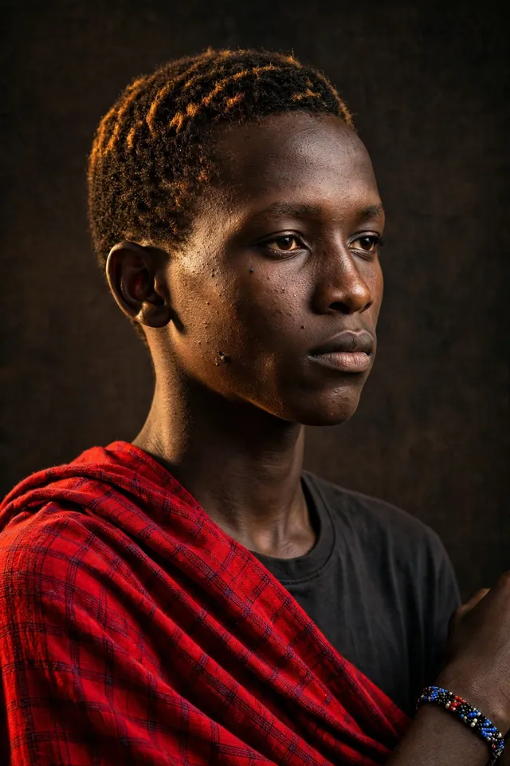
Teen — tall stillness, young herders, princes of the plain.
Calm, observant, and dryly funny once he trusts the room. Moves through rehearsal the way he moves through country — economically.
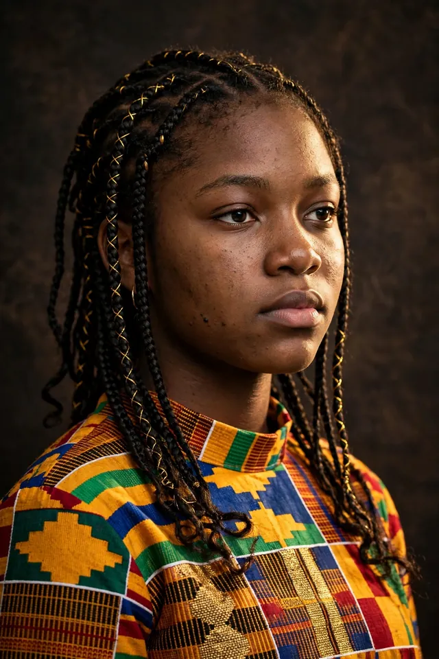
Teen lead — market-bright wit, traders' daughters, negotiators in training.
Witty, warm, and formidably organised for her age. Keeps a rehearsal room cheerful and a scene partner honest.
Child performer — observant sons, young witnesses, boys who carry messages.
Watchful, gentle, and quietly funny. Notices everything in a rehearsal room and mentions about half of it, kindly.
Young lead — composed modernity, students and young professionals carrying a rebuilt country.
Composed, warm underneath the polish, and quietly ambitious. Prepared to a standard that raises everyone else's.
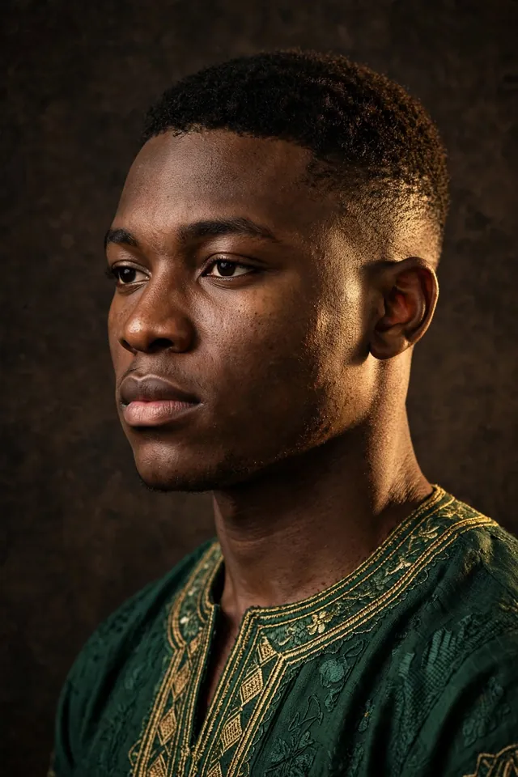
Young lead — princely energy, heirs and athletes, charm learning discipline.
Warm, confident, and competitive in the healthy way. Treats rehearsal like training — logged, measured, improved.
Civic weight — councilmen, headmasters, fathers of the town meeting.
Measured, fair-minded, and funny in a way that ends arguments. The cast member younger actors instinctively call 'sir' — then friend.
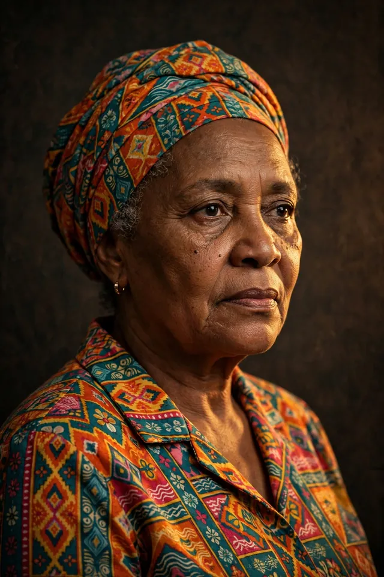
Formidable warmth — hospital matrons, church mothers, women who feed hundreds.
Generous, exacting, and funny at full volume when the moment earns it. Feeds people — cast, crew, characters — as a matter of policy.
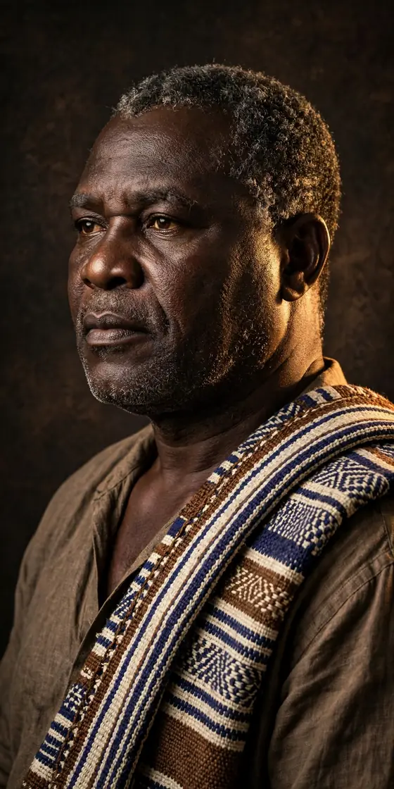
Harbour gravitas — port masters, union elders, men storms don't move
Steady, dry, deeply trusted. The elder other actors check before a hard scene — his calm is contagious and entirely unperformed.
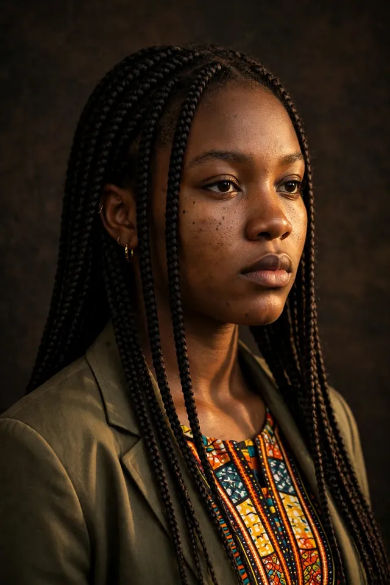
Young lead — sea-light openness, teachers and singers at the start of everything
Bright, generous, quietly determined. First to learn everyone's lines as well as her own; the troupe's morning energy.
Northern clarity — researchers, skippers' daughters, women of few exact words
Exact, self-contained, dryly funny at long intervals. Speaks rarely in company and precisely; trusted completely when she does.
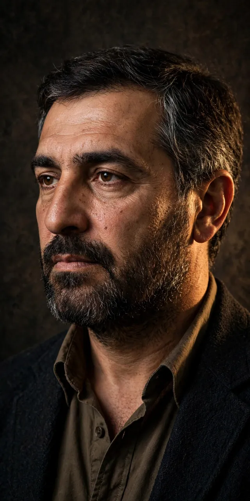
Polyphonic soul — choirmasters, vintners, men whose grief and joy both sing
Warm, musical, generous with food and feeling. The company's supra host in spirit — every rehearsal ends at his table.
Steppe poise — diplomats, riders, women raised on horizons
Composed, observant, quietly humorous. Measures rooms the way riders read weather — early, accurately, without fuss.
Forest patience — shipwrights, archivists, grandfathers of the song festivals
Quiet, kind, unhurried to the bone. The grandfather the whole company adopts; his approval is earned and therefore prized.
Atlantic wit — publicans, solicitors, mothers who run the parish and the family firm
Sharp, funny, formidably kind. Runs any room she enters — cast, crew or parish hall — and is loved for it.
Port-city fire — dock leaders, poets, men who organize
Fierce, loyal, funny in the picket-line way. Organises the cast's football, its playlists and, when needed, its courage.
Young lead — quick-fire humour, nurses and organizers, warmth with edges
Warm, fast, fearless in a crisis. The troupe's emergency laugh and its first volunteer for the night shift.
Weathered ease — harbour masters, retired servicemen, men who fix things and people
Easygoing, dry, quietly protective. Fixes the set's broken kettle and its broken morale with the same unhurried hands.
Winter elegance — archivists, headmistresses, women who keep the old city's keys.
Composed, wry, and quietly formidable, with a dry humour that surfaces only when the work is secure.
Disciplined fire — young officers, athletes, men promoted past their years.
Focused, courteous, and fiercely self-critical, with a sudden grin that younger actors in a company follow. He trains like an athlete and prepares like a staff officer.
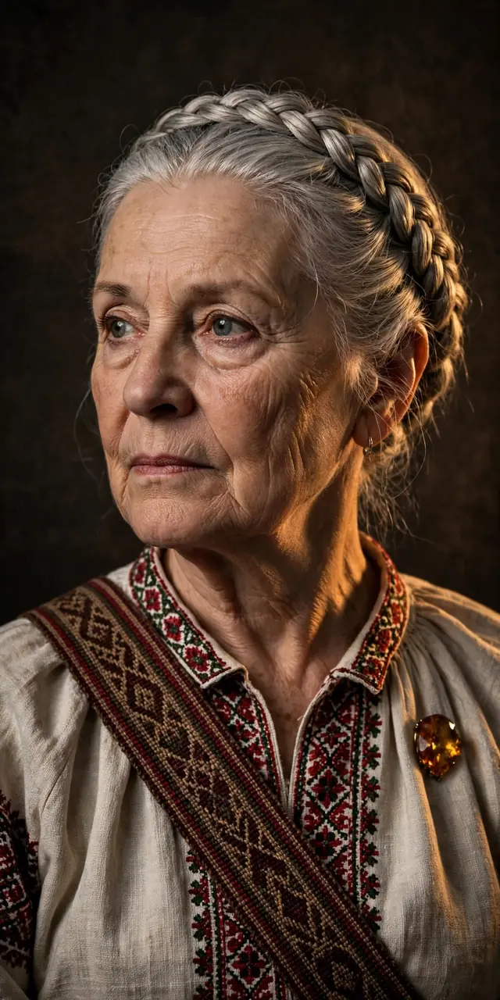
Song-keeper — choir grandmothers, women who carried a language through hard years.
Gentle, steadfast, and quietly humorous, with a singer's patience for repetition until it is right. Companies settle around her the way choirs settle around a true pitch.
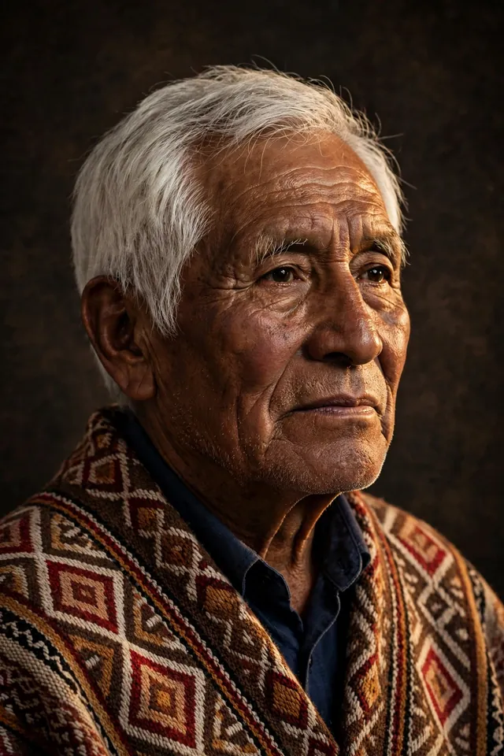
High-altitude endurance — miners' elders, festival captains, men the mountain respects.
Serene, dryly funny, and unhurried in the way of men who have learned what actually matters. Younger actors measure their effort against his calm and quietly redo their work.
Composed precision — surgeons, translators, women who miss nothing.
Calm, exact, and quietly witty, with a translator's respect for what words actually mean.
Stone and scripture — craftsmen, officers, men built like the churches they guard.
Solid, laconic, and unexpectedly tender once trusted, with a mason's patience for work done properly. In company he fixes things — props, arguments, and younger actors' confidence.
Young lead — steppe brightness, students and athletes, first-generation everything.
Bright, determined, and funny, with a first-generation work ethic that makes directors trust her with a lead's schedule. She asks elders questions and writes down the answers.
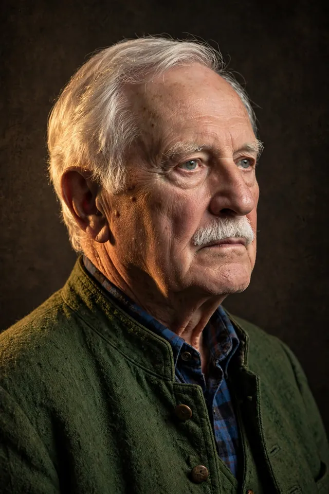
Alpine dry wit — foresters, retired engineers, grandfathers with a workshop for every problem.
Dry, ingenious, and quietly kind, with a forester's habit of looking at the whole hill before answering. Companies bring him broken props and broken scenes in the same spirit.
Harbour matriarch — women who run families, feasts, and half the street.
Warm, capable, and formidably organised, with a laugh that ends arguments better than rulings do. She feeds every company she joins and remembers everyone's business kindly.
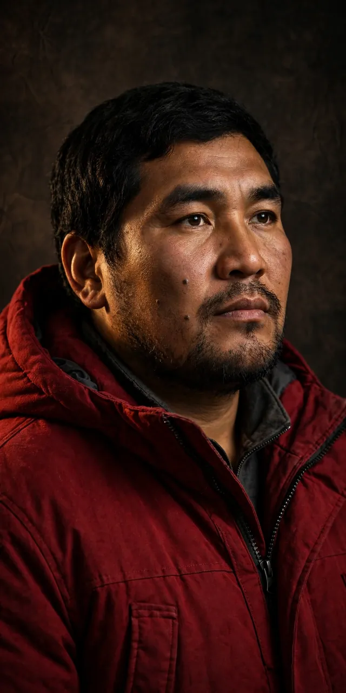
Arctic calm — hunters, guides, men at home in white silence.
Calm, observant, and quietly humorous, with a guide's instinct for who in the group is struggling. He speaks when it helps, which makes companies listen when he does.
Gospel matriarch — church mothers, grandmothers who hold the family line, women whose kitchen is a council chamber
Warm, unhurried, and immovable once decided. Feeds every company she joins and remembers every name.
Creole modern lead — young professionals, artists, women with two heritages and no apologies
Bright, grounded, and funny in two registers. Treats every set like a neighborhood — learns it fast and belongs quickly.
Commanding professional — attorneys, principals, women who run the room they were underestimated in
Exact, courteous, and quietly formidable. Allies trust her completely; opponents underestimate her once.
Bright student lead — campus drama, sisters and daughters at the threshold of the adult world
Curious, diligent, and dryly funny. The company member who has read the whole script, including everyone else's scenes.
Union-hall authority — nurse-administrators, alderwomen, women who have chaired every meeting since 1989
Capable, fair, and funny at exactly the moment a tense room needs it. Keeps a list, checks it twice, forgets nothing.
Warm dramatic lead — teachers, social workers, mothers carrying two generations at once
Generous, exact about feelings, and funny in the way good teachers are — timing as kindness.
Teen — students, daughters, young witnesses in family and school drama
Quiet, watchful, and dryly funny once comfortable. Takes direction literally and then surprises the director with the second take.
Veteran dignity — retired officers, deacons, mentors whose bearing is a curriculum
Disciplined, courteous, and dryly amused by disorder. Younger actors stand straighter around him without being asked.
Working lead — transit men, coaches, fathers whose competence is the family's weather
Steady, funny, and allergic to self-pity — his own or anyone's. The scene partner everyone wants in a two-hander.
Pastor-musician — clergy, choir directors, counselors whose sermon is also a song
Gentle, exact, and funny in the vestry after the service. Companies confide in him the way congregations do.
Teen — students, sons, young men deciding what kind of man the block gets
Earnest, observant, and quick with a grin once the scene breaks. Coaches say he asks the question that improves the rehearsal.
Harlem elder — jazz-generation grandfathers, retired tradesmen, men who remember the street before the towers
Dry, spry-minded, and entirely unimpressed by hurry. His corrections arrive as stories; his stories arrive as verdicts.
Modern leading man — officers, athletes-turned-professionals, young fathers with a service bearing
Exact, good-humoured, and generous with scene partners. Prepares like a professional; relaxes like a friend.
Gullah gravitas — harbor men, historians, quiet authority at the water's edge
Calm, exact about names and histories, and quietly funny at a story's expense — never a person's.
Gospel matriarch — church mothers, retired principals, grandmothers who run the block.
Generous, exact about manners, funny in a way that sneaks up.
Protective strength — mentors, coaches, fathers, men who stand between people and harm.
Steady, dry-humored, loyal to a fault.
Brilliant advocate — attorneys, organizers, women who argue beautifully and win.
Quick, principled, mischievous under pressure.
Musical prodigy — brass-band sons, students, young men with old souls.
Bright, respectful, quietly ambitious.
Knowing warmth — nurses, social workers, church administrators, women who see everything and say half.
Perceptive, unhurried, wickedly funny in private.
Hungry intensity — boxers, strivers, young fathers, men with something to prove.
Driven, loyal, funnier than his face advertises.
Retired-postmaster matriarch — grandmothers, church clerks, women who know every family's address and history.
Exact, warm, and amused by disorder she has already solved twice before.
Warm dramatic lead — archivists, teachers, sisters who hold the family's papers and its peace.
Bright, organised, and funny in footnotes.
Working lead — electricians, coaches, deacons whose competence is a form of care.
Steady, plainspoken, and quietly hilarious once the work is done.
Commanding professional — charge nurses, port administrators, women who run Gulf Coast institutions.
Exact, courteous, and unhurried under pressure.
Harbor elder — retired teachers, dockside grandfathers, men whose anecdotes are the town's archive.
Dry, spry-minded, and entirely unimpressed by hurry.
Teen — students, daughters, young witnesses in family and school drama.
Quiet, watchful, and dryly funny once comfortable.
Young adult — hungry musical striver; session players, young fathers, men building a name.
Driven, loyal, and funnier than his intensity advertises.
Young adult lead — poets, junior attorneys, women whose soft voice carries a hard argument.
Quick, principled, and mischievous under pressure.
Young adult lead — agronomists, radio hosts, women whose competence runs a whole district.
Capable, fair, and funny at exactly the moment a tense room needs it.
Character lead — harbor masters, union stewards, fathers whose laugh settles a dock.
Generous, funny, and exact about promises.
Teen — lakeside students, fishermen's sons, young men deciding what the shore gets from them.
Earnest, observant, and quick with a grin once the scene breaks.
Mid lead — physicians, tea-country matriarchs-in-training, women of precise kindness.
Composed, observant, and dryly funny once trust is earned.
Character elder — craftsmen, mayordomos, grandfathers whose hands remember everything.
Patient, wry, and exact about materials and promises.
Elder statesman — kaumātua, retired captains, grandfathers whose word closes a meeting.
Serene, exacting, and amused by everything young.
Retired-principal matriarch — grandmothers, school principals, women whose word closes a family meeting.
Exact, warm, and amused by disorder she has already solved twice before.
Grounded working lead — plant foremen, union stewards, fathers whose steadiness is the family infrastructure.
Steady, plainspoken, and quietly funny once the work is done.
Warm professional lead — social workers, bank managers, elder sisters who hold a family's papers and its peace.
Bright, organised, and funny in footnotes.
Young adult — hungry striver; logistics drivers, young fathers, men building a name from a route and a plan.
Driven, loyal, and funnier than his intensity advertises.
Commanding elder — retired judges' clerks, church mothers, women who have filed a city's history and remember all of it.
Exact, courteous, and unhurried under pressure.
Working lead — session-road crews, coaches, deacons whose competence is a form of care.
Steady, plainspoken, and quietly hilarious once the work is done.
Teen — students, daughters, young witnesses in family and school drama.
Quiet, watchful, and dryly funny once comfortable.
Teen / young adult — lakeside students, young athletes, sons at decision points.
Earnest, observant, and quick with a grin once the scene breaks.
Young adult lead — district officers, radio hosts, women whose competence runs a whole valley.
Capable, fair, and funny at exactly the moment a tense room needs it.
Mid lead — scholars, investigators, men whose quiet is a method.
Exact, dry, loyal.
Young adult lead — physicians-in-training, mountain guides' daughters, women of precise kindness.
Composed, observant, and dryly funny once trust is earned.
Character lead — fixers, chefs, charming threats whose smile is a negotiation.
Generous, restless, the room's engine.
Community elder — market keepers, grandmothers, women whose calm settles a shore town.
Mischievous, serene, unshockable.
Elder statesman — matai, retired captains, grandfathers whose word closes a meeting.
Serene, exacting, and amused by everything young.
Story-keeping matriarch — grandmothers, church historians, women who remember what a town agreed to forget.
Patient, exact, and quietly devastating when a story needs its last line.
Scholar-lead — professors, archivists, defence attorneys whose glasses come off when the real argument starts.
Precise, dry, and loyal to the evidence — in scenes and in company.
Polished professional lead — news producers, surgeons, elder daughters who run the family group chat and the family.
Bright, organised, and funny in the margins of other people's chaos.
Elder raconteur — retired bandleaders, porch philosophers, grandfathers whose stories are evidence.
Unhurried, amused, and exact about which details of a story are load-bearing.
Young adult — radiant organiser; youth pastors, startup founders, women whose joy is a form of logistics.
Joyful, methodical, and first to volunteer for the unglamorous task.
Teen / young adult — track athletes, apprentices, sons deciding what kind of man the family story needs next.
Earnest, watchful, and quicker to laugh than his intensity advertises.
Teen — quiet witnesses; students, younger sisters, girls whose silence is attention, not absence.
Quiet, observant, and dryly funny once the room feels safe.
Patriarch elder — retired port workers, deacons, grandfathers with a long memory of storms.
Serene, formidable, and tender exactly where tenderness is earned.
Regal young lead — market-association leaders, radio dramatists, women whose poise is a public office.
Composed, fair, and quietly funny at the exact moment a tense room needs it.
Grounded mid lead — engineers, coaches, brothers who fix people by fixing things first.
Steady, observant, and dry — the brother everyone calls before they call anyone else.
Dry northern lead — harbour masters, surgeons, women whose humour arrives like weather: suddenly, and from the sea.
Self-possessed, exact, and funny on a delay that makes it funnier.
Young adult — musical charmer; folk musicians, teachers, men whose warmth is a hometown export.
Easygoing, generous, and serious about the work underneath the grin.
Teen — students, young artisans, daughters carrying a craft older than the city around her.
Bright, curious, and steadier than the adults expect.
Griot elder — storytellers, retired teachers, men whose profile has listened to a whole river town.
Measured, warm, and amused by everything hurried.
Teen lead — watchful daughters, young witnesses, girls who keep the family's receipts.
Steady, observant, and funny in a low key.
Young adult — charming striver; trumpet players, tour guides, sons talking their way up.
Warm, quick, and loyal — the room's morale in human form.
Matriarch-in-the-making — family attorneys, school principals, women who hold the deed and the history.
Composed, exact, and quietly funny at the moment a tense room needs it.
Weathered character lead — retired riverboat men, deacons, blues sidemen with a verdict in the profile.
Dry, patient, and devastatingly understated.
Coastal matriarch — grandmothers, Gullah-Geechee keepers, women whose porch is a court.
Serene, exact, and unshockable.
Loc'd elder — retired autoworkers, jazz elders, grandfathers whose hair is an archive.
Booming laugh, iron memory, zero patience for hurry.
Young adult lead — news anchors, young pastors' wives and young pastors, women mid-ascent.
Assured, warm, and funny in the margins of other people's chaos.
Teen — earnest younger brothers, robotics kids, sons carrying a question.
Earnest, curious, and quietly brave.
Commanding mid-elder lead — port directors, market queens grown into ministers, mothers of nations.
Formidable, fair, and dryly amused by everything hurried.
Steady leading man — engineers, rangers, husbands and captains the crew trusts.
Steady, generous, and quietly funny.
Young adult — radiant newcomer; athletes, medics-in-training, daughters with a plan.
Bright, determined, and generous — celebrates other people's wins loudly.
Wry scholar-elder — retired judges, railway men, uncles whose mustache has opinions.
Expansive, scholarly, kind.
Young adult — precise minimalist; archivists, designers, women of few exact words.
Calm, exact, and dryly amused.
Young adult — open-faced newcomer; port kids, buskers, first-voyage sailors.
Open, musical, and brave about hope.
Teen lead — watchful daughters, young witnesses, girls who notice what the room missed.
Quiet, precise, and dryly funny when she trusts the room.
Young adult — easy-grin striver; delivery riders, junior cooks, sons with a plan and a profile grin.
Easygoing, quick, and loyal.
Composed leading lady — hospital administrators, defense attorneys, women whose calm is a decision.
Assured, exact, and quietly funny at the moment a tense room needs it.
Weathered character lead — retired foremen, deacons, fathers whose verdict arrives before the sentence ends.
Dry, patient, and devastatingly understated.
Coastal matriarch — grandmothers, church mothers, keepers of the family record.
Serene, exact, and unshockable.
Profile elder — retired rail men, grandfathers in profile, men who have seen the weather change.
Serene, exacting, amused by everything young.
Young adult lead — policy aides, young surgeons, women mid-ascent with a schedule and a smile.
Assured, warm, and funny in the margins of other people's chaos.
Young adult — open-faced newcomer; younger brothers, first-job kids, sons whose grin is the family's weather.
Earnest, buoyant, and brave about hope.
Quiet intelligence — archivists, translators, women who solve rooms by listening to them.
Calm, exact, and dryly amused.
Gentle elder-in-the-making — schoolmasters, guides, fathers whose smile has survived weather.
Gentle, weathered, and quietly funny.
Young adult — radiant newcomer; netballers, nursing students, daughters rooted in place.
Grounded, warm, quietly funny.
Steady leading man — engineers, officers, husbands and captains the crew trusts.
Steady, generous, and quietly funny.
Andean matriarch — grandmothers, market keepers, women whose hands know the altitude.
Kind, unhurried, and unshockable.
Young adult — open earnest lead; junior doctors, choir singers, sons arguing with history kindly.
Warm, earnest, and funny in a grounded way.
Teen lead — watchful daughters, young witnesses, girls whose stillness rearranges a scene.
Quiet, precise, and dryly funny when she trusts the room.
Young adult — easy-grin striver; delivery riders, junior sailors, sons with a plan and a profile grin.
Easygoing, quick, and loyal.
Composed leading lady — surgeons, school principals, women whose calm is a decision.
Assured, exact, and quietly funny at the moment a tense room needs it.
Weathered character lead — retired steel men, deacons, fathers whose verdict arrives before the sentence ends.
Dry, patient, and devastatingly understated.
Crescent City matriarch — grandmothers, church mothers, keepers of the family record.
Serene, exact, and unshockable.
Bearded elder — retired watermen, grandfathers, men who have seen the weather change.
Serene, exacting, amused by everything young.
Young adult lead — news producers, young architects, women mid-ascent with a schedule and a smile.
Assured, warm, and funny in the margins of other people's chaos.
Young adult — open-faced newcomer; younger brothers, first-job kids, sons whose courage arrives a half-second behind the grin.
Earnest, buoyant, and brave about hope.
Physical lead — warriors, athletes, enforcers, women who lead from the front.
Disciplined, dry, kind.
Steady leading man — engineers, officers, husbands and captains the crew trusts.
Steady, generous, and quietly funny.
Gentle matriarch-in-the-making — grandmothers, market keepers, women whose hands know the highlands.
Kind, unhurried, and unshockable.
Young adult — open earnest lead; junior doctors, young engineers, sons arguing with history kindly.
Warm, earnest, and funny in a grounded way.
Radiant character lead — choir directors, community organisers, women whose joy is a discipline.
Luminous, grounded, and funny.
Warm elder — retired teachers, grandfathers, uncles of the world.
Gentle, weathered, and quietly funny.
Teen lead — watchful daughters, young witnesses, girls whose quiet rearranges a room.
Quiet, precise, and dryly funny when she trusts the room.
Young adult — easy-grin striver; junior medics, delivery leads, sons with a plan.
Easygoing, quick, and loyal.
Composed leading lady — clinic directors, choir-raised organisers, women whose calm is a decision.
Assured, exact, and quietly funny at the moment a tense room needs it.
Weathered character lead — retired tradesmen, union stewards, fathers whose verdict arrives before the sentence ends.
Dry, patient, and devastatingly understated.
Lowcountry matriarch — grandmothers, church mothers, keepers of the family record.
Serene, exact, and unshockable.
Bearded elder — retired railroad men, grandfathers, men who have seen the weather change.
Serene, exacting, amused by everything young.
Young adult lead — news producers, young architects, women mid-ascent with a schedule and a smile.
Assured, warm, and funny in the margins of other people's chaos.
Young adult — open-faced newcomer; younger brothers, first-job kids, sons whose courage arrives a half-second behind the grin.
Earnest, buoyant, and brave about hope.
Quiet leading lady — harbour engineers, archivists, women who lead without raising their voice.
Steady, generous, and quietly funny.
Steady leading man — engineers, officers, husbands and captains the crew trusts.
Steady, generous, and quietly funny.
Young adult — gentle newcomer; junior doctors, river-town daughters, women whose kindness has a spine.
Warm, earnest, and funny in a grounded way.
Wry scholar-elder — retired judges, harbour men, uncles whose mustache has opinions.
Expansive, scholarly, kind.
Composed character lead — headteachers, harbour masters, women whose wryness is a governing style.
Kind, unhurried, and unshockable.
Warm elder — retired teachers, grandfathers, uncles of the world.
Gentle, weathered, and quietly funny.
Real-person talent — “Omar” · natural leader; drama / action / lifestyle
Confident and authoritative without forcing it — a natural leader's ease. Versatile across drama, action, and lifestyle, with a professional, executive bearing.
Real-person, likeness-based talent — not a synthetic actor. In the guild with his consent.
No guild members match that search.